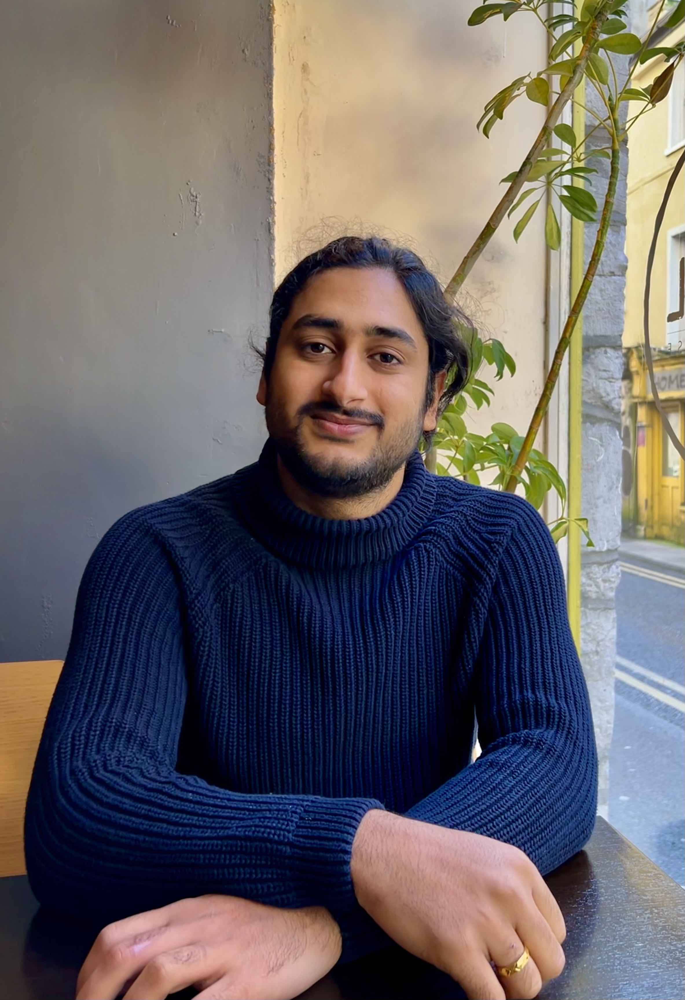
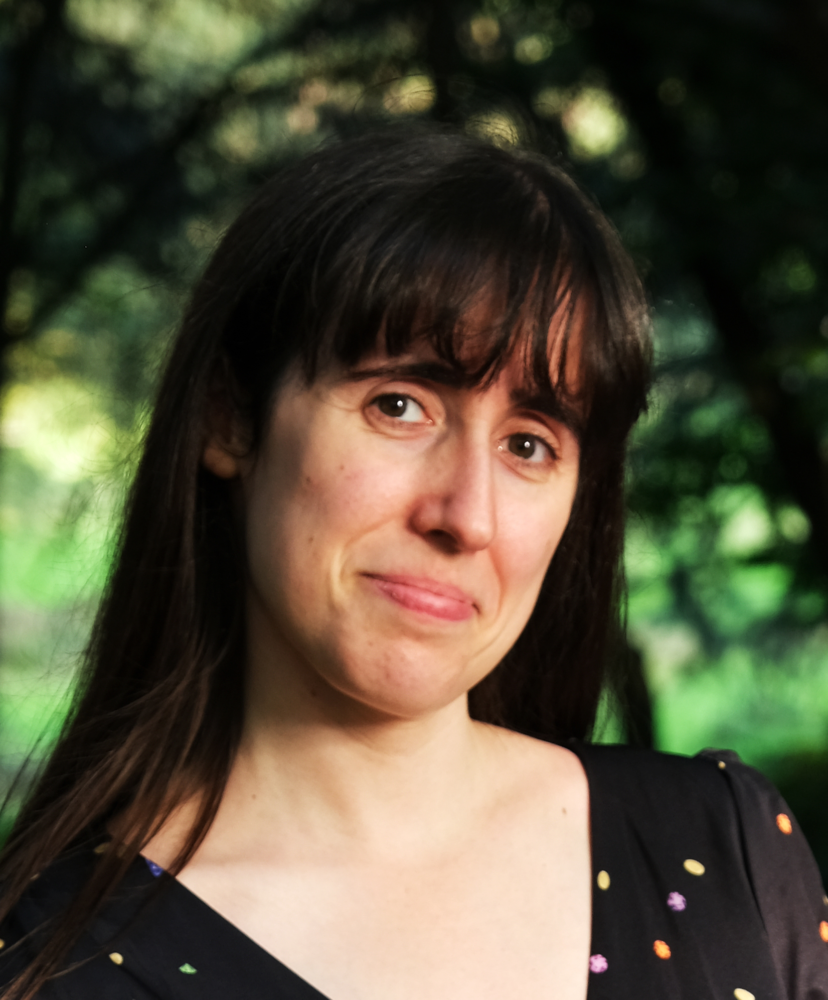
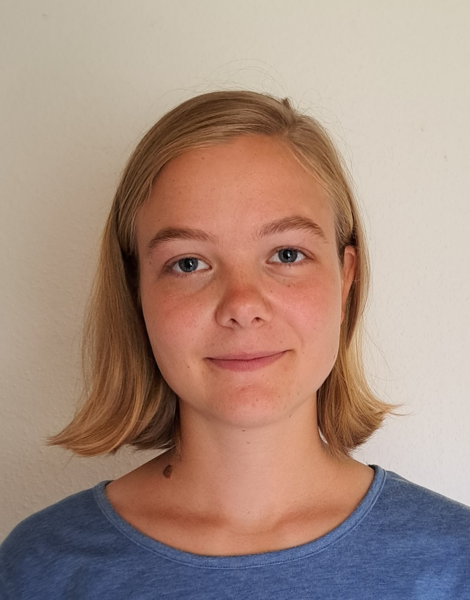
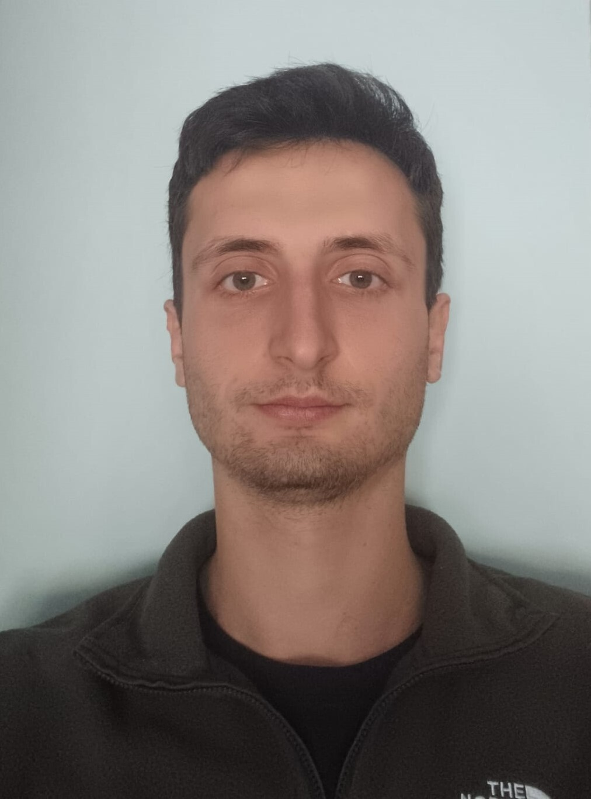
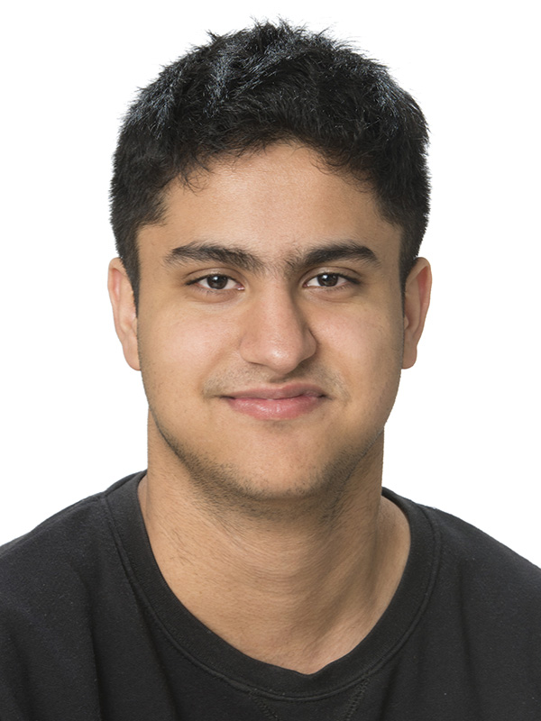

Group
On this page, I list people that that I work with. I've tried to provide contact details and links to their websites, but if something is missing and you would like to contact someone, please reach out and I would be more than happy to put you in touch.
Postdoctoral researchers
Dr Sai Chaitanya Susarla (2025-)
 I am a research fellow working with Prof. Greg Ashton on hierarchical profile domain timing of radio pulsars. My background is in using pulsars as tools to study interstellar medium. I graduated from a Masters at the Indian Institute of Science Education and Research, Thiruvananthapuram (IISER TVM). I then went on to pursue my PhD at the University of Galway working with Prof. Aaron Golden and Prof. Evan Keane. My PhD thesis title is "Examining ecliptic pulsars using the LOFAR telescope" focussing on studying solar wind and interstellar medium using pulsar timing methods of ecliptic pulsars. In addition to this, I am a member of the International Pulsar Timing Array (IPTA) aiming to discover nano-hertz Gravitational waves. I was instrumental in leading observations on several LOFAR stations to contribute to the IPTA efforts.
Aside from academics, I am passionate about promoting astronomy among young people. I have taken part in outreach activities, including representing radio astronomy at a Trinity College Dublin Space Society event held at the Irish LOFAR Observatory. I have also contributed to initiatives aimed at raising scientific awareness among underprivileged children in India. Outside of work, I enjoy travelling, playing badminton, and watching cricket.
Dr Adriana Dias (2023-2024)
 I am an Research Fellow working with Greg Ashton on timing variations of radio pulsars, with a particular interest on the glitch phenomena observed in the PSR B1828-11 radio pulsar. My background is in Particle Physics, having obtained a Masters degree in 2019 and a PhD degree in 2023 at Royal Holloway, University of London. My Masters project, Calibration of a High-Pressure Time Projection Chamber, involved working on the hardware and calibration systems of a High-Pressure Time Projection Chamber, to be used in Neutrino Physics Research. I was directly involved in the calibration and construction of this detector. My PhD project, Detector Development for Particle Physics and Applications to Environmental Monitoring, involved the development of a novel device, called PlomBOX, employing a CMOS sensor and lead-sensing bacteria to assay lead in drinking water, up to the World Health Organisation’s upper limit of 10 ppb. I was involved in the development of the data acquisition and slow control tools and developed the analysis interface used by the PlomBOX.
Outside research, I am passionate about making physics available to people from working class backgrounds and as such I help lead a Working Class in Physics Forum at Royal Holloway. I am an avid gamer, love to read and enjoy nature walks.
PhD students supervision
Ann Malz

- Start date: 2023
- Thesis title: TBC
I am a PhD student in astrophysics, working with Greg Ashton and Nicolo Colombo on using machine learning for gravitational wave analysis. I am currently working on applying conformal prediction to determine uncertainties. When making use of machine learning, for example applied to gravitational wave parameter estimation, quantifying the uncertainty of how accurate the estimate is is essential. Conformal prediction provides a method to determine this uncertainty for any point prediction algorithm.
My background is in theoretical physics and astrophysics, with a Masters degree from the University of Glasgow. In my masters project, working with John Veitch, I applied machine learning in the form of normalising flows to model and hence remove glitches from gravitational wave data, with the aim to improve the Bayesian inference based parameter estimation in the presence of glitches.
Besides research, I enjoy volunteering with projects promoting science and engaging young people in STEM, and have been involved in various projects with the Swedish Federation of Young Scientists, such as organising Rays Research Academy for Young Scientists. In my free time I also enjoy a variety of outdoor activities as well as good literature.
Sean Hibbit

- Start date: 2023
- Thesis title: TBC
I'm currently a PhD student at Royal Holloway, working with Xavier Rojas and Greg Ashton who is my second supervisor. My work is focused on an idea to further the Weber bar resonance bar concept using Low-Temperature superdluid optomechanics. I completed my MSci at Royal Holloway, my dissertation was on modelling many body quantum systems; this also included a research review on quantum computers and associated algorithms.
My previous projects include
- Creating a computer model, to simulate many-body quantum systems and explore the Fermi-Dirac Distribution with Grégoire Ithier.
- Designing and building a successful low-temperature experiment, currently used to introduce undergraduate to low temperature physics. This was under L. V. Levitin.
- Designing and creating software in python to manage a vapor deposition nano-fabrication tool for Phil Meeson.
Mattia Emma

- Start date: 2022
- Thesis title: TBC
I am a PhD student in gravitational wave astronomy under the supervision of Dr. Greg Ashton. My research portfolio spans various facets of gravitational wave physics, where I actively contribute as a member of the Laser Interferometer Gravitational-Wave Observatory (LIGO). One significant aspect of my work involves gravitational wave data analysis, where I delve into the intricacies of parameter estimation. Thus far I have been looking into the problems arising from the approximations used in our analysis with the increasing amount of detected signals, and into the benefits introduced by using more detectors for the analysis and their dependence on the performance of the single detectors.
Following my MSc in Astrophysics in Potsdam, where I focused on Numerical Relativity simulations, I am still collaborating with Prof. Dr. Tim Deatrich and Dr. Violetta Sagun, specifically exploring dark matter-admixed neutron stars and their detectability through our current and future ground-based detectors. I have completed my BSc in Physics at La Sapienza University in Rome, Italy, where my thesis on the constraints on the tidal deformability of neutron stars through gravitational waves was supervised by Prof. Dr. Francesco Pannarale.
Beyond the academic realm, I am passionately committed to fostering equal access to education globally. As a Cumberland Lodge Fellow in the 2023-2025 cohort, I actively participate in initiatives aimed at raising awareness of societal issues and trying to find solutions through dialogue. In this pursuit, in 2019 I founded a non-governmental organization dedicated to combating educational disparities, with a specific focus on enabling girls from underprivileged backgrounds to access secondary education. Additionally, I am a basketball player for the University team and my interests extend to the realms of African literature, history, and cooperative endeavors.
Nikhil Sarin

- Start date: 2018
- Graduated: 10/2021
- Thesis title: "The observational consequences of neutron star postmerger remnants"
- Personal website: nikhil-sarin.github.io
I co-supervised Nikhil along with Paul Lasky while an Assistant Lecturer at Monash University. Nikhil had a wide range of interests and was a wonderful student to supervise, always pushing me into parts of astronomy I hadn't yet ventured and studying the literature in depth as he went. Nikhil is now a NORDITA Fellow and overall excellent scientist.
PhD student support
Below, I list students to which I have contributed to their supervision.
- Zhi-Qiang You
- Rowina Nathan
- Simone Mozzon
Summer project students
- 2025
- Michael Das took up an RHUL-supported project to compare stochastic samplers and work on measuring the rate of sub-threshold glitches.
- Sam Di-Folco (RAS bursary) first developed improved ML models for pipeline combination, showing that random forests outperformed neural networks and then worked on noise simulation.
- 2024
- Julianna Ostrovska Joined us (again!) for another 6-week RHUL summer placement. This time, Julianna investigated Simulation Based Inference approaches and compared them with likelihood-based stochastic samplers. (Co-supervised by Mattia Emma)
- Kristina (Kika) Latkoczyova (Royal Astronomical Society Bursary). Kika joined us and developed a demonstration of using a supervised ML approach for gravitational-wave search. (Co-supervised by Ann Malz)
- Lucie Robbins joined us and continued the investigation of the periodic modulations in PSR B1828-11.
-
2023
- Julianna Ostrovska joined us for a 6-week RHUL summer placement studying the periodic modulations of the radio pulsar B1828-11
- Tiago Fernandes De Nobrega joined us for a 6-week RHUL summer placement on "Gravitational Wave Detectors: Exploring the Configuration to Optimise Source Parameter Interference"
- A-level student Pavan joined us for the 2-week project funded by In2Science to build a "duck detector" to simulate the triangulation of gravitational-wave detectors
-
2022
- Floyd Hyatt joined us for a 6-week summer placement on optimisation methods for gravitational-wave parameter estimation
- Rahmah Mackie joined us for a 3-week summer placement helping to develop new teaching materials for our "Advanced Skills" module